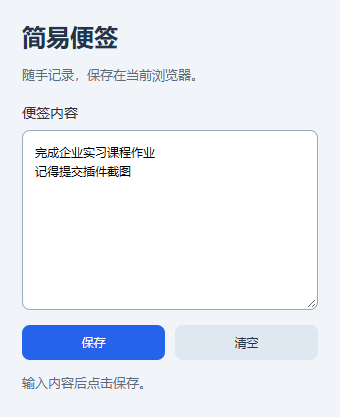

简易便签
打开浏览器，随手记一件事。
一个最简单的浏览器工具栏便签插件。输入内容，点击保存，下次打开继续查看。
插件效果

安装方法
- 下载 ZIP 并解压，找到包含 manifest.json 的文件夹。
- 手动打开 Chrome 的 chrome://extensions 或 Edge 的 edge://extensions。
- 开启“开发者模式”，点击“加载已解压的扩展程序”。
- 选择包含 manifest.json 的文件夹。
- 在浏览器扩展菜单中打开“简易便签”。
功能与说明
支持输入便签、保存内容、清空内容，最多 2000 个字符。
数据仅保存在当前浏览器，不上传服务器，不申请网页访问权限。卸载插件或清理扩展数据可能删除便签。本项目为课程练习，采用解压安装方式，未上架扩展商店。